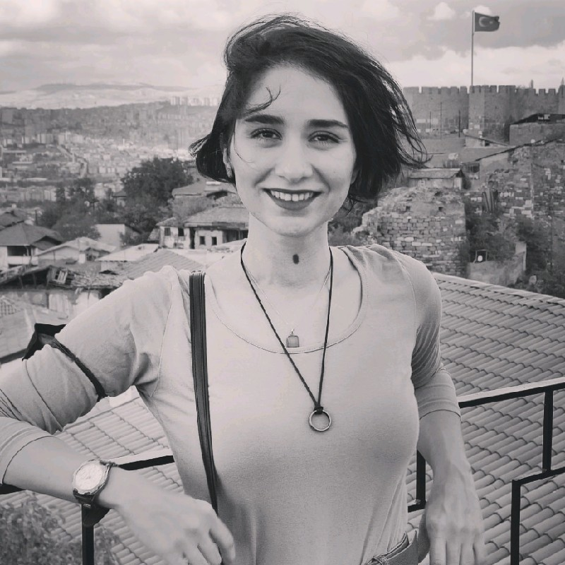

Pegah Soltani

Product Manager | Software Developer | Shark Lover
Work Experience
NANODEMS, Ankara — Web Developer (React)
(June 2023 - August 2023)
-
Transitioned from the Product Management department to the Development team,
focusing on web development using React.
-
Collaborated with the development team to design, code,
test, and debug web applications.
-
Ensured high-quality results
and contributed to the successful development of web applications.
NANODEMS, Ankara — Product Manager
(April 2022 - June 2023)
-
Managed a Physical Security Integration Management project.
-
Analyzed customer needs, gathered feedback, and designed the
UI phase of the product. Utilized Agile methodologies (Scrum)
for project management.
-
Successfully delivered the project requirements on time and
contributed to an increase in customer satisfaction.
Call Center Studio / Alotech, Ankara — Product Manager
(October 2021 - April 2022)
-
Analyzed customer requirements for a call center multi-channel application.
-
Prepared sprints and product backlog for development,
tested and tracked tasks, and designed the UI phase using Figma.
Managed stakeholder communication.
-
The call center application met customer
requirements and achieved improvements in operational efficiency.
Baykurt, Ankara — Software Developer and Product Manager
(June 2021 - September 2021)
-
Analyzed customer requirements for a call center multi-channel application.
-
Collaborated with the customer to design the UI/UX,
gathered requirements, and managed project tasks using
Agile methodologies.
-
Successfully delivered the application meeting the customer's needs.
ULAKFIN, Ankara — Software Developer and Research Intern
(July 2019 - September 2019)
-
Conducted research in Machine Learning, specifically
character clustering in OCR.
-
Developed a cross-platform UI using Android Studio.
-
Contributed to the research efforts and
created a functional cross-platform UI for the project
Education
Bilkent University, Ankara — Bachelor
(September 2015 - July 2020)
-
B.Sc. in Computer Science and Engineering
-
Awarded admission with 100% scholarship award
Skills
Programming Skills
Technical Skills/Tools
Language Skills
Contact Me